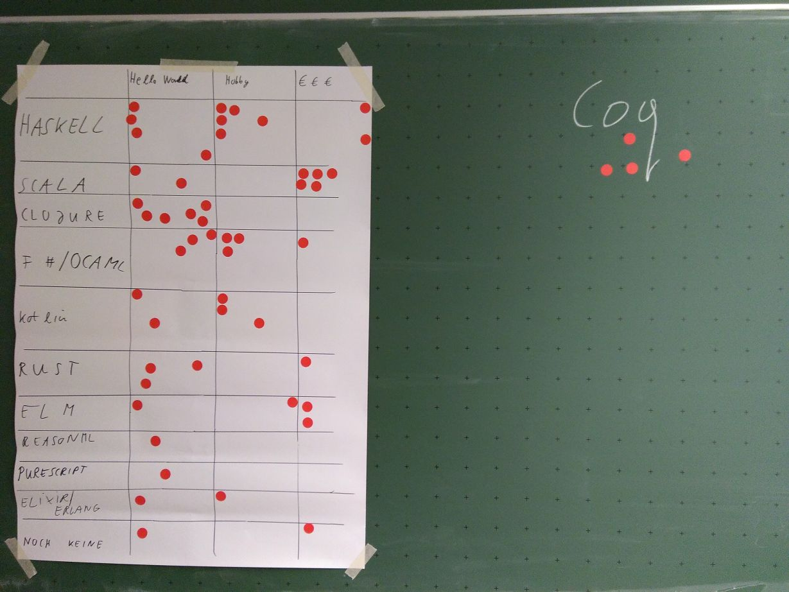

Zwei neue Artikel für iX
von Martin Grotz, 2020-07-02
Auch wenn ich hier im Blog lange Zeit nichts Neues geschrieben habe, war ich nicht gänzlich
untätig:
Ich habe zwei Artikel für das iX-Special "Moderne
Programmiersprachen 2020" geschrieben:
Einen über den Einsatz von Elm in Form einer Web Component, und einen Grundlagen-Artikel über Elixir.
Phoenix LiveView in einer hinter einem Apache gehosteten Phoenix-Anwendung
von Martin Grotz, 2020-02-03
Ich habe in eine bestehende Phoenix-Anwendung ein bisschen Client-Side-Dynamik reingebaut - mit Phoenix LiveView.
Zuerst ging das nach dem Update auf meinem Server (ursprüngliche Anleitung siehe mein
vorheriger Blog-Post zum Thema) nicht, da LiveView gar nicht erst initialisiert wurde.
Der Grund war ziemlich einfach: Ich habe vor dem Bauen des Releases vergessen, die Web-Assets neu zu
erzeugen.
Mit den folgenden zwei Zeilen macht man das - mittlerweile habe ich mir eine build_prod.sh geschrieben,
die alle Schritte nacheinander ausführt:
npm run deploy --prefix ./assets
mix phx.digest
Das nächste Problem war, dass LiveView Probleme mit der Session-Info hatte.
Hier hat es geholfen, eine Anpassung im Projekt in der "endpoint.ex"-Datei zu machen:
Aus
plug Plug.Session,
store: :cookie,
key: "_my_app_key",
signing_salt: "abc123"
wird
plug Plug.Session, @session_options
Dann müssen natürlich die Optionen woanders definiert werden:
@session_options [
store: :cookie,
key: "_my_app_key",
signing_salt: "abc123"
]
Und dann noch für LiveView angegeben werden:
socket "/live", Phoenix.LiveView.Socket, websocket: [connect_info: [session: @session_options]]
Damit hat es dann aber immer noch nicht funktioniert, denn es fehlte noch die Weiterleitung im Apache
vom LiveView-Websocket. Dafür musste ich auf dem Server selbst die Konfigurationsdatei anpassen,
also z.B. in "/etc/apache2/sites-available/041-my-site-ssl.conf".
Da müssen Einträge dazu:
ProxyPass /live/ ws://localhost:<port_des_phoenix_servers>/live/
ProxyPassReverse /live/ ws://localhost:<port_des_phoenix_servers>/live/
Nach Aufspielen der Elixir-App-Version mit allen Änderungen und Neustart des Apache2 nach der
Konfigurationsänderung lief dann endlich alles wieder.
Artikel zu Erlang und Elixir auf informatik-aktuell.de
von Martin Grotz, 2019-11-12
Heute ist ein Artikel von mir auf informatik aktuell erschienen:
Nebenläufigkeit
ganz einfach mit Elixir und Erlang
Darin geht es um Erlang, Elixir, Nebenläufigkeit, das Aktor-Modell, und wie man damit Systeme
strukturieren kann.
Verbesserte Variante des rerun-Skripts
von Martin Grotz, 2019-09-29
Meine ersten Gehversuche mit dem rerun-Befehl waren schon ganz gut. Mittlerweile habe ich mein
Shell-Skript zum Starten davon noch ein bisschen verfeinert.
Während ich mit Elixir entwickle habe ich in einer Shell parallel jetzt eigentlich immer diesen Befehl
laufen:
rerun --dir "lib" --dir test --pattern "**/*.{ex,exs}" --exit --clear --name "Tests" -- mix test
Dadurch ist das Ergebnis in den Notifications besser zu erkennen und man findet beim Reinschauen dann
schneller, was genau das Problem ist.
Für die Typanalyse via Dialyizer nutze ich ebenfalls mittlerweile einen rerun-Befehl mit sehr ähnlichem
Muster:
rerun --dir "lib" --pattern "**/*.ex" --exit --clear --name "Dialyzer" -- mix dialyzer
"rerun" statt "mix test.watch"
von Martin Grotz, 2019-08-24
Ich habe in der hörenswerten Podcast-Folge 63 Designing
Elixir Systems With OTP von Elixir-Mix von einem kleinen Hilfsprogramm gehört, mit
dem man beliebige Befehle ausführen lassen kann, sobald sich eine zu einem angegebenen Muster passende
Datei ändert: "rerun".
Allerdings ist es ein Ruby Gem, d.h. man benötigt Ruby, was ich auf meinem Linux-System erstmal
installieren musste, denn ich mache eigentlich nichts mit Ruby.
Danach habe ich mir für meine jeweilige Elixir-Applikation ein kleines Shell-Skript "mix_test_watch.sh"
geschrieben, damit ich das Datei-Muster nicht jedesmal auf's Neue eintippen muss:
#!/bin/bash
rerun --dir "lib" --pattern "**/*.ex" -- mix test
Anschließend noch ein chmod +x ./mix_test_watch.sh und schon habe ich einen startbaren,
mitlaufenden Test-Watcher.
Alternativ gibt's als Test-Watcher für Elixir auch noch eine spezialisierte Mix-Erweiterung: mix_test_watch. "rerun" kann aber eben nicht nur
als Test-Watcher verwendet werden, sondern z.B. auch, um bei jeder Änderung einen Dialyizer
(Typ-Analyse-Tool für Erlang/Elixir) Durchlauf zu starten, oder aber in der Extremform mit Hilfe einer
anderen Mix-Erweiterung, ex_check, gleich das volle
Paket (Formatter, Linting, Statische Code-Analyse, Tests, Type-Checker). Wobei dann jeder Durchlauf
signifikant Zeit braucht...
Eine Elixir Phoenix App in Apache auf einem vServer hosten
von Martin Grotz, 2019-06-23
ACHTUNG: Der nachfolgende Eintrag ist eher eine Gedächtnisstütze für mich als ein richtig ausgearbeiteter
Blog-Post. Aber weil ich das selten mache, und es doch relativ viele Schritte sind, wollte ich sie
einfach mal festgehalten haben.
Das verbreitetste Release-Tooling für Elixir heißt distillery. Die Installationsanleitung dafür findet
sich hier.
Nach einem kurzen Blick in die nach der Installation mit mix release.init erzeugte Datei
"rel/config.exs" kann ein erstes Probe-Release gebaut werden mit MIX_ENV=prod mix release
Anschließend wird gemäß der Anleitung
das Phoenix Zeugs gebaut.
Dann muss noch gemäß Distillery
mit Phoenix Walkthrough die Konfiguration von Phoenix angepasst werden.
Außerdem brauchen wir einen Ecto Migrations Runner, da wir das ja nicht einfach so machen können. Diese
Anleitung hat mir dabei sehr geholfen.
Bei meinem vServer liegen die Webseiten alle in /var/www/html, also habe ich da einen neuen Unterordner
erstellt. Da wird dann die von distillery erzeugte .tar.gz Datei reingelegt und entpackt. Die Datei
wurde bei mir lokal unter "_build/prod/rel/run_for_your_lives/releases/0.1.0/" abgelegt.
Auf dem remote Server kann das Release dann mit
PORT=4002 ./bin/run_for_your_lives foreground probeweise gestartet werden. Erst, wenn da
alles glatt läuft, kümmere ich mich um die Einbindung in den Apache. ACHTUNG: Für das automatische
Starten später muss der Port in der "config/prod.exs" vor dem Distillery-Build hart kodiert werden!
In meinem konkreten Fall muss ich jetzt erstmal PostgreSQL installieren und konfigurieren (alles auf
Debian buster):
Hilfreich dabei war die Kombination von der PostgreSQL
Anleitung für Debian und der Installationsanleitung
aus dem Debian Wiki.
Und dazu noch das Debian Paket pgadmin4-apache2, damit es direkt in den Webserver eingebunden wurde, so
dass ich nicht mit den Kommandozeilen-Tools rumhantieren muss.
Die SQL-Daten habe ich vorher aus den lokal angelegten Produktiv-DBs via "Backup" in pgAdmin4 exportiert
und einfach als SQL direkt auf dem frisch installierten Server über das dort ebenfalls gerade erst
installierte pgAdmin4 über das Query Tool wieder eingespielt.
Unter sites-available für meinen Apache musste ich dann noch zwei Dateien anlegen: Eine, die von http auf
https weiterleitet, und eine, die die https Anfrage an den Apache dann an die Erlang-App weiterleitet.
Für diese Weiterleitung brauchen wir noch zwei Erweiterungen (mods): mod_proxy_http und
mod_proxy_wstunnel.
Dann die erste Datei: "run_for_your_lives.conf" mit dem Inhalt:
ServerName run.finde-ich-super.de
ServerAdmin martin.grotz@gmx.de
DocumentRoot /var/www/html/run
ErrorLog ${APACHE_LOG_DIR}/error.log
RewriteEngine on
RewriteCond %{SERVER_NAME} =run.finde-ich-super.de
RewriteRule ^ https://%{SERVER_NAME}%{REQUEST_URI} [END,NE,R=permanent]
Und dann noch die mit den Weiterleitungen auf die Erlang-Application und dem eigentlichen Setup:
ServerAdmin martin.grotz@gmx.de
ServerName run.finde-ich-super.de
ErrorLog ${APACHE_LOG_DIR}/run_for_your_lives_error.log
SSLEngine on
ServerName run.finde-ich-super.de
SSLCertificateFile
SSLCertificateKeyFile
Include /etc/letsencrypt/options-ssl-apache.conf
ProxyPass /socket/ ws://localhost:4002/socket/
ProxyPassReverse /socket/ ws://localhost:4002/socket/
ProxyPass / http://localhost:4002/
ProxyPassReverse / http://localhost:4002/
Danach den Symlink setzen, damit in "sites-enabled" auch die passende Konfigurationsdatei aus
"sites-available" eingebunden ist.
Jetzt noch einen Apache-Restart und dann mit "certbot" das Zertifikat um die neue Subdomain erweitern.
Am Schluss
sollten wir unsere Erlang-Applikation noch direkt beim Hochfahren
starten, sonst laufen die Apache-Requests ins Leere.
Dazu muss eine Datei angelegt werden: "/lib/systemd/system/run_for_your_lives_phoenix.service", mit
ungefähr nachfolgendem Inhalt:
[Unit]
Description=Run For Your Lives Phoenix App
After=network.target
[Service]
Type=simple
User=
Group=
Restart=on-failure
RestartSec=5
Environment=LANG=de_DE.UTF-8
WorkingDirectory=/var/www/html/run
ExecStart=/var/www/html/run/bin/run_for_your_lives foreground
RemainAfterExit=no
SyslogIdentifier=run_for_your_lives
[Install]
WantedBy=multi-user.target
Die müssen wir dann noch beim System bekannt machen: "systemctl enable
run_for_your_lives_phoenix.service". Anleitung übrigens aus dem Elixir
Forum
Lambda Lounge Meetup Anfang April & dotnet Day Franken
von Martin Grotz, 2019-04-07
Anfang April war es mal wieder soweit: Die Lambda
Lounge hat sich in Erlangen getroffen, um über Daten und (Typ-)Klassen zu reden.
Der Vortrag war sehr interessant und die Diskussion im Anschluss facettenreich.
Ich freue mich auf die Fortsetzung des Meetups im Mai.
Außerdem hatte ich die Gelegenheit mit meinem Kollegen Patrick
zusammen einen Workshop zum Thema "Funktionale Programmierung in C# und F#" abzuhalten.
Dafür waren wir auf der lokalen Konferenz dotnet
Day Franken.
Die Konferenz war super - sowohl der Workshop-Tag als auch der nachfolgende Konferenztag. Nächstes Jahr
werde ich da auf jeden Fall wieder dabei sein.
Und weil ich mit dem Meetup und vor allem mit der Vorbereitung des Workshops so viel zu tun hatte, gab's
hier auch solange nichts Neues.
Vermutlich wird das auch bis Mai so bleiben, da schon der nächste Vortrag
(und die entsprechende Vorbereitung) ansteht.
Lambda Lounge Meetup Ende Februar
von Martin Grotz, 2019-03-06
Am Montag letzte Woche gab es wieder ein
Treffen der Lambda Lounge - also des Functional Programming Meetups Nürnberg.
Diesmal waren wir in den Räumlichkeiten der redheads Ltd. -
vielen Dank dafür!
Thematisch ging es um Funktoren, Applicatives und Monaden - der Vortrag war sehr aufschlussreich. Auch
die anschließende Diskussion hat mir viele neue Einsichten beschert. Beim gemütlichen Beisammensein
ließen wir den Abend ausklingen.
Ich freue mich schon auf das nächste Treffen - ein Thema steht allerdings noch nicht fest. Updates gibt
es als erstes auf der Meetup-Seite.
Elixir, Phoenix & Elm Vortrag auf der parallel Konferenz
von Martin Grotz, 2019-02-23
Am Mittwoch und Donnerstag war ich auf der parallel Konferenz in Heidelberg und habe dort einen Vortrag
über Elixir, Phoenix und Elm gehalten.
Die Konferenz hat mir insgesamt gut gefallen, auch wenn die Themenschwerpunkte nicht so meine sind. Dazu
sind High Performance Computing und C/C++ einfach zu weit weg von meinem Arbeitsalltag. Trotzdem fand
ich es total interessant, mal in eine "andere Welt" der Software-Probleme und -Problemlösungen
reinschnuppern zu können.
Jetzt geht es vortragsmäßig erstmal in ruhigeres Fahrwasser. Die nächsten Wochen werde ich mich auch
erstmal wieder mehr F# zuwenden, um mich für den Workshop
beim .NET Day Franken vorzubereiten.
Elm-Vortrag auf der c't webdev Konferenz
von Martin Grotz, 2019-02-19
Ich hänge weiterhin hinterher, aber: Vor zwei Wochen war ich als Sprecher auf der
c't webdev Konferenz. Die Konferenz war in einem
architektonisch sehr interessanten Gebäude, dem KOMED in Köln.
Organisation, Technik und Catering waren top, aber dadurch, dass die Konferenz ausverkauft war, ging es
teilweise doch ziemlich eng zu. Keynotes und Speaker waren ebenfalls vom Feinsten.
Die Konferenz soll nächstes Jahr wieder stattfinden (in
einer vergrößerten Location) - meiner Meinung nach eine klare Empfehlung. Wenn ich die Möglichkeit habe,
werde ich auf jeden Fall wieder dabei sein.
Elm-Artikel auf heise-developer
von Martin Grotz, 2019-02-14
Der versprochene zweite Teil des Elixir&Elm-Artikels
auf heise-developer ist online!
Und wie beim vorherigen Artikel gilt natürlich auch hier: Falls es noch Fragen oder Anmerkungen gibt,
einfach melden.
Event-Seite & Elixir-Artikel auf heise-developer
von Martin Grotz, 2019-02-07
Aktuell hänge ich ein bisschen hinterher mit meinem Blog im Gegensatz zu den sonstigen Events.
Deshalb gibt es jetzt der Übersichtlichkeit halber eine neue Unterseite: Events&Termine.
Dort liste ich die Termine meiner Vorträge auf und auch, wenn ich mal irgendwo einen Artikel
veröffentlicht habe.
Genau so eine Veröffentlichung gab es auch letzten Freitag, und zwar einen Artikel
zu Elixir und Phoenix auf heise-developer. Falls es zu dem Artikel noch Fragen oder Anmerkungen
gibt - immer her damit!
In den nächsten Tagen wird es auch den zweiten Teil dort zu lesen geben, in dem zum Elixir-Backend ein
Elm-Frontend gebaut wird.
Die Lambda Lounge ist eröffnet
von Martin Grotz, 2019-01-31
Vorgestern war das erste Treffen der Lambda Lounge. Mir hat es eine Menge Spaß gemacht,
was sicher auch an der enormen Breite von Hintergründen und FP-Erfahrung lag, die am Start war: Von
Entwicklern ganz ohne FP-Erfahrung bis zu ausgewiesenen Profis, die sogar Vorlesungen zum Thema halten,
war alles dabei.
Gleich zu Beginn gab es eine Selbsteinschätzung der Teilnehmer auf einer Klebetafel (die Idee zu den
Klebepunkten habe ich von Marco Emrich übernommen). Mal
sehen, wie das in 12 Monaten dann aussieht:

Danach haben wir noch überlegt, wie wir in Zukunft weitermachen wollen: Mit einer Mischung aus
theoretischen Impulsvorträgen und praktischer Anwendung des jeweils Gelernten werden wir in den
nächsten Monaten an den Start gehen.
Zum Abschluss habe ich noch eine kleine Live-Coding-Session mit Elm gemacht.
Ich freue mich auf jeden Fall schon auf das nächste Treffen der Lambda Lounge, welches aller
Wahrscheinlichkeit Mitte/Ende Februar stattfinden wird. Vielen Dank an dieser Stelle auch nochmal an Merlin Göttlinger für die Organisation des Raumes!
Quellcode zum OOP Vortrag
von Martin Grotz, 2019-01-30
Der Vortrag
auf der OOP 2019 ist vorbei. Mir hat es Spaß gemacht und ich glaube, die Zuhörer fanden es
auch ganz okay.
Den Quellcode zum Vortrag gibt es auf
meinem github-Account. Bei Fragen, Anmerkungen oder Verbesserungsvorschlägen schreibt mir
einfach eine Nachricht.
Vortrag auf der OOP Konferenz
von Martin Grotz, 2019-01-21
Nachdem es bedingt durch einen Server-Umzug und die Feiertage hier länger nichts Neues gab, gibt es nun
doch mal wieder was:
Ich war nicht gänzlich untätig, sondern habe meine Elm-Kenntnisse mit einer passenden
Server-Programmiersprache kombiniert: Elixir.
Daraus ist ein Vortrag entstanden, den ich übermorgen auf der OOP 2019 halten werde. Die Details finden
sich im
Konferenzprogramm.
Ich freu mich schon riesig drauf, und danach geht's hier auch wieder mit neuen echten Inhalten in
Sachen Elm (und Elixir) weiter!
Qwixx Würfler Mini-App
von Martin Grotz, 2018-10-19
Ich bin neulich auf ein ganz nettes Würfelspiel gestoßen: Qwixx.
Die Punktekarten kann man leicht transportieren, aber man hat ja nicht überall Platz zum Würfeln.
Also habe ich mich dran gemacht, eine Mini-WebApp zu bauen, die das Würfeln übernimmt - und auch gleich
noch die Rechenarbeit.
Das fertige Ergebnis lässt sich hier sehen, und den
zugehörigen Quellcode gibt es auf
github.
Ich fange bei sowas immer ganz gerne mit dem Datenmodell an. Das ist für unser Programm sehr einfach:
Wir haben sechs verschiedene Würfel, und wir brauchen für den Zufallsgenerator dann jeweils noch einen
"Seed"-Wert.
Also sieht das gesamte Modell so aus:
type alias Model =
{ whiteDieOne : Int
, whiteDieTwo : Int
, blueDie : Int
, redDie : Int
, greenDie : Int
, yellowDie : Int
, nextSeed : Seed
}
Der Einfachheit halber ist die Augenzahl hier einfach eine Ganzzahl. Schöner wäre es natürlich, hier
einen Union Type zu nehmen, der alle sechs gültigen Werte total abdeckt.
Für ein so kleines Programm wie dieses hier habe ich mir das aber erstmal gespart - vielleicht
refactore ich es ja irgendwann mal als weitere Übung.
An Interaktionen bietet die App nur das Neu-Würfeln aller Würfel ("RollDice") - und wir brauchen einen
Nachrichtentyp, um
einen Vorgang mit Seiteneffekt abzubilden ("InitialTimeUpdated"):
type Msg
= RollDice
| InitialTimeUpdated Posix
"Posix" ist hierbei das neue Zeitformat in Elm 0.19.
Die "InitialTimeUpdated"-Nachricht wird eingangs von folgender Funktion zur Auslösung vorgesehen:
createInitialTimeCommand : Cmd Msg
createInitialTimeCommand =
now |> Task.perform InitialTimeUpdated
"now" ist eine fertige Funktion aus der Time-Bibliothek von Elm, welche einen Task zurück gibt.
Da dieser Task per Elm-Definition niemals fehlschlagen kann, können wir ihn einfach mit "Task.perform"
ausführen und nach erfolgter Ausführung die "InitialTimeUpdated"-Nachricht mit dem ermittelten
Zeitstempel absetzen.
Die Funktion führen wir dann gleich im init aus, damit wir zu Beginn des Programms direkt den
Zeitstempel ermitteln können.
Die restlichen Felder werden irgendwie vorbelegt - deren Werte werden sowieso gleich wieder mit
zufallsgenerierten ersetzt.
Für den Zufallsgenerator brauchen wir dann noch einen vorbelegten Seed - dieser wird aber auch gleich
ersetzt, nämlich mit dem frisch ermittelten Zeitstempel.
Setzt man hier immer den gleichen Seed, bekommt man immer die gleiche Abfolge von Zufallszahlen (bzw.
eigentlich eben Pseudozufallszahlen).
init : ( Model, Cmd Msg )
init =
( { whiteDieOne = 1
, whiteDieTwo = 1
, redDie = 1
, greenDie = 1
, blueDie = 1
, yellowDie = 1
, nextSeed = initialSeed 0
}
, createInitialTimeCommand
)
Die beiden Wege in der update-Funktion machen eigentlich das gleiche, nur eben mit anderen Inputs:
update : Msg -> Model -> ( Model, Cmd Msg )
update msg model =
case msg of
RollDice ->
( rollAndUpdateModel model model.nextSeed, Cmd.none )
InitialTimeUpdated time ->
( time |> posixToMillis |> initialSeed |> rollAndUpdateModel model, Cmd.none )
Im RollDice-Fall haben wir alle Informationen schon in unserem model, im InitialTimeUpdated-Fall müssen
wir aus der ermittelten Zeit erst noch einen initialen Seed-Wert für den Pseudozufallszahlengenerator
erzeugen und mit übergeben.
In der rollAndUpdateModel Funktion rufen wir dann wiederum verschiedene Hilfsfunktionen auf, die die
eigentliche Arbeit machen.
Einerseits erzeugen wir den nächsten Eingabe-Wert für den Zahlengenerator, andererseits die nächsten
sechs Zufallszahlen, die wir dann auf die einzelnen Würfel verteilen.
Hierzu nutzen wir Pattern-Matching auf die Liste der Zahlen.
rollAndUpdateModel : Model -> Seed -> Model
rollAndUpdateModel model seed =
let
( newNumbers, nextSeed ) =
createRandoms seed
modelWithNewNumbers =
mapRandomsToDice model newNumbers
in
{ modelWithNewNumbers | nextSeed = nextSeed }
createRandoms : Seed -> ( List Int, Seed )
createRandoms seed =
let
generator =
Random.list 6 (Random.int 1 6)
in
Random.step generator seed
mapRandomsToDice : Model -> List Int -> Model
mapRandomsToDice model newNumbers =
case newNumbers of
[ whiteOne, whiteTwo, red, yellow, green, blue ] ->
{ model
| whiteDieOne = whiteOne
, whiteDieTwo = whiteTwo
, redDie = red
, yellowDie = yellow
, greenDie = green
, blueDie = blue
}
_ ->
model
In "createRandoms" rufen wir die verschiedenen Random-Funktionen auf, um einen Generator für eine Liste
mit sechs Einträgen von Ganzzahlen zwischen 1 und 6 (jeweils inklusive) zu erzeugen.
Diesen Generator stecken wir dann zusammen mit dem aktuellen Seed-Wert in die "step"-Funktion, die uns
dann die gewünschen Werte und einen neuen Seed für den nächsten Durchlauf ausspuckt.
In "mapRandomsToDice" wissen wir genau, dass die Liste passt zum Destructuring, aber Elm zwingt uns
trotzdem, einen alternativen Pfad anzugeben, weil der Compiler ja nicht wissen kann, dass sie genau
passt.
In diesem nie eintretenden Fall geben wir einfach das model zurück, damit wir uns kein Maybe oder
Result verwenden müssen, obwohl hier eh immer alles klappt.
Für die Darstellung in der View habe ich bisher noch keine elegante Lösung gefunden.
Aktuell merke ich mir die CSS-Klassen und Klassen-Kombinationen, nutze ein paar Hilfsfunktionen zur
Berechnung der Summe und Umwandlung von Zahlenwerten in anzeigbare Texte.
Am Ende gibt es dann eine Funktion, die aus einem Datensatz jeweils ein div erzeugt.
Und dann wird das alles für jeden einzelnen Würfel und jede Würfelsumme definiert und einmal mit einem
List.map durchgenudelt:
getDiceSumAsText : Int -> Int -> Html never
getDiceSumAsText first second =
first + second |> String.fromInt |> text
getDieValueAsText : Int -> Html never
getDieValueAsText die =
die |> String.fromInt |> text
multipleClasses : List String -> Html.Attribute never
multipleClasses classes =
let
toTuple c =
( c, True )
in
List.map toTuple classes
|> classList
view : Model -> Html Msg
view model =
let
blockClasses =
[ "block" ]
generateDiv classes textFn =
div [ multipleClasses (List.concat [ blockClasses, classes ]) ] [ textFn ]
whiteClasses =
[ "white" ]
whiteDieClasses =
"white-border" :: whiteClasses
redClasses =
[ "red" ]
redDieClasses =
"red-border" :: redClasses
yellowClasses =
[ "yellow" ]
yellowDieClasses =
"yellow-border" :: yellowClasses
greenClasses =
[ "green" ]
greenDieClasses =
"green-border" :: greenClasses
blueClasses =
[ "blue" ]
blueDieClasses =
"blue-border" :: blueClasses
blockList =
[ ( whiteClasses, getDiceSumAsText model.whiteDieOne model.whiteDieTwo )
, ( whiteDieClasses, getDieValueAsText model.whiteDieOne )
, ( whiteDieClasses, getDieValueAsText model.whiteDieTwo )
, ( redDieClasses, getDieValueAsText model.redDie )
, ( redClasses, getDiceSumAsText model.whiteDieOne model.redDie )
, ( redClasses, getDiceSumAsText model.whiteDieTwo model.redDie )
, ( yellowDieClasses, getDieValueAsText model.yellowDie )
, ( yellowClasses, getDiceSumAsText model.whiteDieOne model.yellowDie )
, ( yellowClasses, getDiceSumAsText model.whiteDieTwo model.yellowDie )
, ( greenDieClasses, getDieValueAsText model.greenDie )
, ( greenClasses, getDiceSumAsText model.whiteDieOne model.greenDie )
, ( greenClasses, getDiceSumAsText model.whiteDieTwo model.greenDie )
, ( blueDieClasses, getDieValueAsText model.blueDie )
, ( blueClasses, getDiceSumAsText model.whiteDieOne model.blueDie )
, ( blueClasses, getDiceSumAsText model.whiteDieTwo model.blueDie )
]
blockElements =
List.map (\blockDef -> generateDiv (Tuple.first blockDef) (Tuple.second blockDef)) blockList
in
div []
[ div [ class "grid" ]
blockElements
, button [ class "roll-button", autofocus True, type_ "button", onClick RollDice ] [ text "Roll again" ]
]
Die eigentliche View ist dann ein Grid mit den ganzen Würfeln und Summen und Werten, und drunter ein
einziger Button, mit dem man jeweils neu würfeln kann.
Damit kann man Qwixx gut unterwegs spielen, wenn man keine Möglichkeit hat, die tatsächlichen Würfel zu
benutzen, zum Beispiel weil kein Platz ist (Flugzeug) oder es zu holprig ist (Bus, Auto).
Das Typsystem nutzen - Zwei einführende Videos
von Martin Grotz, 2018-08-09
Bevor wir uns daran machen, mit dem Elm-Typsystem möglichst gut unsere Domäne des Kartenspiels
abzubilden, möchte
ich auf zwei sehr gute Videos zum Thema hinweisen - auch wenn beide Englisch sind.
Einmal ist das
"Domain Modeling Made Functional" vom
großartigen Scott Wlaschin. Die Beispiele sind zwar in F#, lassen
sich aber größtenteils gut auf Elm übertragen.
Und das zweite Video ist
"Making Impossible States Impossible" von
Richard Feldman. Hier sind praktischerweise alle Beispiele
auch gleich in Elm.
Coole Typen - Teil 4
von Martin Grotz, 2018-07-19
Im letzten Teil der Typen-Serie zu Elm geht es um zwei wichtige Konzepte, die einen großen Anteil daran
haben, dass Elm seine
"keine Laufzeitfehler"-Garantie wirklich leben kann: Maybe und Result.
type Maybe a
= Just a
| Nothing
Mit Maybe lässt sich der Fall ausdrücken, dass es einen Wert gibt - oder eben nicht. Mein
bisher häufigster
Anwendungsfall dafür sind optionale Eingabefelder. Ist kein Wert drin, haben wir eben Nothing. Und
sobald
was eingegeben wurde, ist Just a drin. Sonst benutzt man es auch für Funktionsparameter, die nicht
unbedingt
gesetzt sein müssen.
Elm kommt also zur Darstellung von "hier könnte was sein oder auch nicht" ohne Magic Values und
auch ohne
das gemeine NULL aus, das schon für so viel Kummer gesorgt hat.
Hat man nun aber einen Vorgang, der auch fehlschlagen kann, und man möchte auch die Information
behalten,
was genau schief gegangen ist, so gibt es dafür den Result-Datentyp:
type Result error value
= Ok value
| Err error
Hat alles geklappt, so steckt das Ergebnis im Ok. Gab es aber einen Fehler, so steckt
dieser im Err-Fall.
Sowohl Maybe als auch Result sind im Endeffekt nur clever definierte Union Types. Und weil jeder
Fehlerfall
entweder über ein Maybe oder Result ausgedrückt wird, und wir bei Union Types verpflichtend alle
definierten
Fälle behandeln müssen, müssen wir uns für jede Stelle in unserem Programm überlegen, wie wir mit dem
jeweiligen
Fehlerfall genau umgehen. Dadurch können keine Fälle vergessen werden und es gibt keine unerwarteten
Überraschungen
zur Laufzeit.
Bei unserem ersten Projekt, einem kleinen Spiel, werden uns Maybe und Result allerdings eher
selten begegnen,
da dieses ohne Server oder komplizierte Daten-Konvertierungen auskommt. Hier haben wir fast alles
selbst
in der Hand und bewegen uns nur in der geschützten Elm-Welt.
Sicherheits-Upgrade im Hintergrund
von Martin Grotz, 2017-07-03
Heute gibt es nur ein kleines Sicherheits-Upgrade der Seite gegen die unerwünschte Weitergabe des
Referers und
außerdem habe ich die strikte Transportsicherheit angemacht. Die Seite
https://webbkoll.dataskydd.net hat mir dabei sehr
geholfen.
Coole Typen - Teil 3
von Martin Grotz, 2018-05-23
Jetzt geht es zu den Union Types. Diese haben sehr viele verschiedene Namen, je nach Programmiersprache
oder
Community in der man sich bewegt: Union Types, Discriminated Unions, Tagged Unions, Algebraic Datatypes
oder
auch Choice Types. Choice Types drückt für mich auch am ehesten aus, was man damit machen kann, ohne,
dass
man das ganze Hintergrundwissen dazu braucht:
Man kann damit eine feststehende, zur Kompilierzeit bereits bekannte Menge an verschiedenen
Auswahlmöglichkeiten
beschreiben. Union Types sind das wohl wichtigste Werkzeug, um eine Fachdomäne sauber und inklusive der
Vermeidung
von ungültigen Zuständen auszudrücken.
Zuerst einmal schauen wir uns Union Types ohne zusätzliche Daten pro Auswahl an:
type Hintergrundfarbe = Rot | Gelb | Blau
Wenn wir nun in unserer Webseite je nach Hintergrundfarbe einen passenden CSS-Hexcode ausspucken wollen,
können
wir eine Funktion schreiben, die mit einem
case ... of die verschiedenen Fälle auswertet. Das nennt man dann Pattern
Matching:
farbeZuHex : Hintergrundfarbe -> String
farbeZuHex hintergrundfarbe =
case hintergrundfarbe of
Rot ->
"#ff0000"
Gelb ->
"#ffff00"
Blau ->
"#0000ff"
Wichtig ist dabei auch: Elm erzwingt immer die Behandlung aller Pfade. Man kann zwar mit
_ -> ... einen Standardfall festlegen, der immer dann ausgeführt wird, wenn
kein anderer Zweig passt, aber dann hebelt
man einen wichtigen Schutzmechanismus gegen Programmierfehler aus, daher ist nicht unbedingt
empfehlenswert.
Eine weitere wichtige Einsatzmöglichkeit von Union Types sind die sogenannten Single Case Union Types.
Diese
dienen vor allem dazu, Funktionsparameter eindeutig festzulegen, so dass man nicht aus Versehen zum
Beispiel
zwei Floats beim Aufruf verdreht. Dies zu nutzen erhöht die Lesbarkeit und Sicherheit des eigenen Codes
deutlich!
type Gewicht = Gewicht Float
type Groesse = Groesse Float
type alias Bmi = Float
errechneBmi : Gewicht -> Groesse -> Bmi
errechneBmi (Gewicht gewicht) (Groesse groesse) =
gewicht / (groesse * groesse)
Im Gegensatz zu dem type alias Bmi, der letztendlich nur eine Umbenennung eines Floats darstellt, und
damit auch
überall dort als Argument erlaubt ist, wo ein Float erwartet wird, sorgen die beiden Single Case Unions
dafür,
dass die Reihenfolge wirklich eingehalten werden muss. Wäre die Funktionssignatur ein
Float -> Float -> Float bestündie die sehr große Gefahr, dass man Gewicht
und Größe beim Aufruf vertauscht und dabei sinnlose Ergebnisse
erhält, obwohl der Compiler grünes Licht gibt.
In der berechneBmi-Funktion sieht man auch, wie man einen solchen Union Type auch gleich elegant
"auspacken"
kann, so dass man direkt mit den "enthaltenen" Floats arbeiten kann.
Auch viele interne Typen von Elm sind eigentlich Union Types, zum Beispiel Boolean oder das später noch
genauer
erläuterte Maybe bzw. Result.
Eine weitere wichtige Möglichkeit für den Einsatz von Union Types ist es, jedem einzelnen Fall
unterschiedliche
Daten mitgeben zu können. Das macht sie wesentlich mächtiger als die aus vielen anderen Sprachen
bekannten
switch-case-Statements:
type alias Radius = Float
type alias Laenge = Float
type alias Breite = Float
type Form
= Kreis Radius
| Rechteck Laenge Breite
flaeche : Form -> Float
flaeche form =
case form of
Kreis radius ->
pi * (radius ^ 2)
Rechteck laenge breite ->
laenge * breite
Durch die geschickte Kombination von Union Types kann man innerhalb seiner Fachdomäne eine auch für
Domänenexperten,
die sich mit Programmierung nicht so gut auskennen, gut verständliche Beschreibung erstellen, die dann
auch
noch beim Programmieren wenig fehleranfällig ist. Deshalb bilden Union Types meist das Rückgrat jeder
Elm-Typbeschreibung.
Die ausführlichere offizielle Doku zum Thema findet sich
auf der Elm-Seite.
Coole Typen - Teil 2
von Martin Grotz, 2018-05-13
Wie angekündigt geht es in diesem Teil der Elm-Typen-Betrachung um Listen und Union Types. Beginnen
wollen wir hierbei mit
den Listen. Listen sind in Elm das Standardmittel um Mengen von Elementen zu verwalten. Listen sind,
genau
wie alle anderen Datentypen in Elm, unveränderlich ("immutable"), d.h. fügt man ein Element hinzu oder
entfernt
eines, so bekommt man immer eine Kopie der Liste zurück - das Original bleibt unverändert bestehen.
Listen werden einfach mit eckigen Klammern definiert. Mehrere Elemente trennt man mit einem Komma:
liste =
[ 1, 2, 3, 5, 7, 11 ]
Es gibt auch einige andere Möglichkeiten, Listen zu erzeugen. Hierzu verweise ich auf die
Elm-Dokumentation zur
Liste.
Es gibt auch noch eine Menge weiterer Funktionen, die auf Listen operieren. Besonders hervorheben möchte
ich
hier die Möglichkeit, via
head auf das erste Element einer Liste zugreifen zu können - das machen wir
uns in einem späteren Eintrag beim
Einführen des Pattern Matching zu nutze, und
map.
Mit
map kann man über alle Elemente einer Liste iterieren und auf jedes Element
eine Funktion anwenden. Das Ergebnis
dieser Funktion wird dann an die gleiche Stelle einer neuen Liste geschrieben. Dies bildet eine
mächtige
Möglichkeit, alle Elemente einer Liste zu transformieren.
-- Listen
liste : List Int
liste =
[ 1, 2, 3, 5, 7, 11 ]
quadriere : Int -> Int
quadriere a =
a ^ a
quadrierteListe : List Int
quadrierteListe =
List.map quadriere liste
Listen sind auch deshalb ein sehr wichtiger Bestandteil von Elm weil in allen view-Funktionen die
HTML-Elemente
jeweils Funktionen sind, die einerseits eine Liste von Attributen, andererseits eine Liste mit
Kindelementen
entgegennehmen. Daher kann man sich mit Hilfe der zahlreichen Listen-Funktionen sehr elegant seine
HTML-Views
bauen.
Für die Union Types gibt's dann doch noch einen eigenen Artikel, da diese vermutlich etwas mehr Raum und
Zeit
in Anspruch nehmen werden.
Coole Typen - Teil 1
von Martin Grotz, 2018-05-02
Bevor wir mit dem Umsetzen der Fachdomäne in Elm-Typen anfangen können müssen wir natürlich wissen,
welche Typen es in Elm
überhaupt gibt und was wir damit jeweils machen können. Im ersten Teil der dreiteiligen Artikel-Reihe
geht
es um die grundlegenden Typen:
Primitive Typen
Es gibt in Elm eine Reihe von grundlegenden Typen, die dann zu anderen Typen zusammengesetzt
werden. Im Detail sind das:
- Char: Einzelnes Zeichen
- String: Zeichenketten
- Bool: True oder False, um einen Wert darzustellen, der entweder Wahr oder Unwahr sein kann
- Int: Ganze Zahl
- Float: Kommazahl
- number: Kann entweder Int oder Float sein - je nach tatsächlicher Verwendung
Als Elm-Code sieht das dann jeweils so aus:
c : Char
c =
'a'
s : String
s =
"Zeichenkette"
b : Bool
b =
True
i : Int
i =
42
f : Float
f =
3.1415
n1 : number
n1 =
42
n2 : number
n2 =
3.1415
Records
Records sind unveränderliche Datenstrukturen, die aus mehreren Werten zusammengesetzt sind. Sie
werden
in Elm für gewöhnlich als Type-Alias definiert - theoretisch kann man aber auch direkt einen
Record
an Ort und Stelle definieren, ohne vorher einen passenden Type-Alias angelegt zu haben.
Wichtig: Records in Elm werden über ihren Inhalt verglichen - nicht über ihre Referenz.
Außerdem: Records
in Elm erfüllen dann eine Funktions-Signatur, wenn sie strukturell passen.
In Elm-Code sieht das dann so aus:
-- Record
somePoint =
{ x = 3, y = -1 }
-- Record mit dazugeschriebener Typdefinition
aPoint : { x : Int, y : Int }
aPoint =
{ x = 3, y = -1 }
-- Record Type für einfachere wiederholte Verwendung
type alias Point =
{ x : Int, y : Int }
anotherPoint : Point
anotherPoint =
{ x = 3, y = -1 }
-- beide Records erfüllen die Funktions-Signatur von someFunc, weil die Struktur jeweils passt
someFunc : Point -> Point -> Point
someFunc p1 p2 =
{ x = p1.x + p2.x, y = p1.y + p2.y }
x =
someFunc somePoint anotherPoint
Noch mehr Infos zu Records gibt es
in der offiziellen Elm-Doku.
Im nächsten Teil der Serie geht es dann um Union Types und Listen.
A Cure for Runtime Errors - Vortrag vom MATHEMA Campus 2018
von Martin Grotz, 2018-04-22
Ich hatte kürzlich die Gelegenheit, auf dem internen
MATHEMA Campus vor einer Handvoll
Zuhörer aus dem "Family&Friends"-Bereich meines Arbeitgebers einen
kurzen Vortrag über Elm zu halten. Schwerpunkt war hierbei, wie Elm dabei hilft, Laufzeitfehler in
Web-Frontends
zu verhindern. Daher hieß der Vortrag dann auch
"A Cure for Runtime Errors. Ich habe die Folien zum Vortrag
als HTML-Seite hochgeladen.
Die Code-Beispiele finden sich
auf meinem
Github-Account.
Das erste Projekt: Ein Kartenspiel
von Martin Grotz, 2018-04-18
Am einfachsten lernt man mit einer neuen Programmiersprache meiner Meinung nach umzugehen, indem man ein
konkretes
kleines Projekt in Angriff nimmt.
Viele der Herausforderungen zeigen sich nämlich erst, wenn man zumindest ein klein wenig über Hello
World hinausgeht.
Da es aber auch nicht zu kompliziert werden soll, habe ich mich für eine
Einzelspieler-Browser-only-Variante
eines Kartenspiels entschieden:
Die Regeln des Spiels "Schnarch Schnarch" sind überschaubar und auch im
Internet verfügbar.
Im Laufe der Entwicklung werde ich auch immer wieder mal Artikel einschieben, die jeweils Funktionalität
oder
Syntax von Elm erklären, die ich danach dann gebrauchen werde. So wird es nicht zu viel trockene
Theorie,
aber sie fällt auch nicht ganz untern den Tisch!
Jetzt ist aber erstmal nur das Anlegen des Projektskeletts dran. Hierzu verwenden wir erneut die
praktischen
Befehle, die uns
create-elm-app zur Verfügung stellt:
elm-app create schnarchschnarch-sp-elm
Anschließend wird erstmal aufgeräumt: Im
public-Ordner, der die statischen Ressourcen enthält, werfen wir alles
außer
index.html weg.
Nun folgt noch der
source-Ordner, der den eigentlichen Elm-Quellcode enthält. Hier entfernen
wir in der
index.js-Datei erstmal die Verbindung zum ServiceWorker durch das Löschen
der Zeilen
import registerServiceWorker from './registerServiceWorker'; und
registerServiceWorker(); Die zugehörige Datei
registerServiceWorker.js wird gelöscht.
In
Main.elm - dem Einsprungpunkt jedes Elm-Programms - vereinfachen wir die
view-Funktion derart, dass sie folgendermaßen aussieht:
view : Model -> Html Msg
view model =
div [] []
Dadurch wird nurmehr eine Seite mit einem leeren
div erzeugt.
Damit ist die Leinwand vorbereitet, um jetzt mit dem nächsten Schritt weitermachen zu können: Die
Fachdomäne
analysieren und daraus möglichst gute Typdefinitionen zu erstellen.
Elm-Schnellstart
von Martin Grotz, 2018-04-17
Die Installation von Elm ist sehr einfach. Die einzige Voraussetzung ist ein aktuelles
node.js.
Anschließend kann man alle wichtigen Tools und die Programmiersprache selbst mit einem einzigen Befehl
herunterladen:
npm install elm elm-format create-elm-app --global Danach können wir uns schon eine erste
App erzeugen und in den neu erzeugten Ordner wechseln:
elm-app create hello-world
cd hello-world
Dort starten wir den Entwicklungswebserver via
elm-app start Damit sind wir auch schon fertig und können uns den Output unseres
Elm-Programms im Browser anschauen. Dazu
rufen wir die Standard-URL des Entwicklungswebservers auf:
http://localhost:3000/